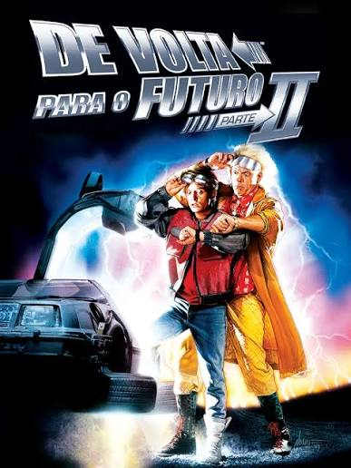
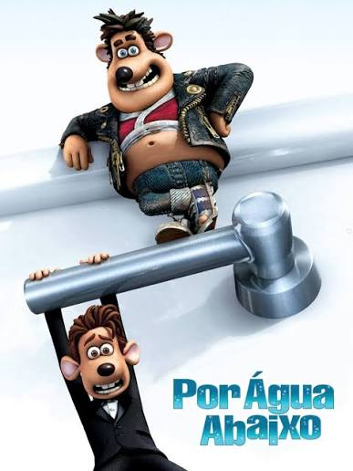
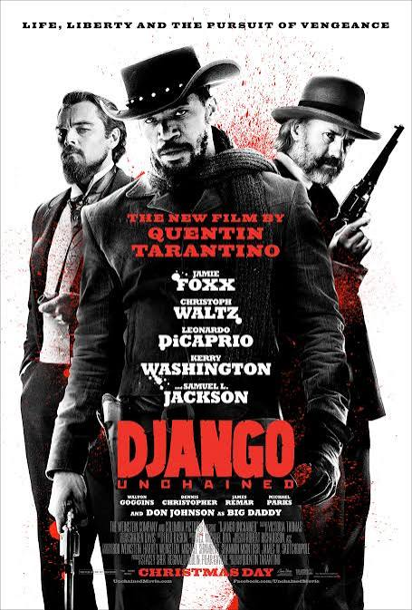
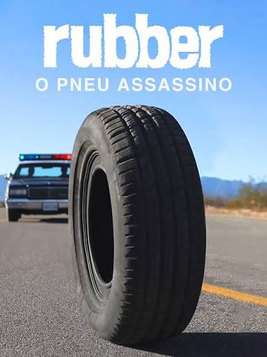
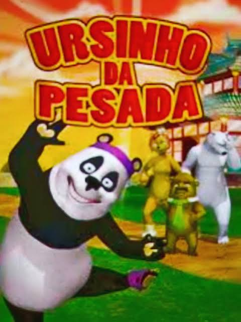

Filmes
-
De volta para o futuro

Sinopse: De Volta para o Futuro 2 segue Marty McFly e o cientista Doc Brown em uma viagem de 1985 até o ano de 2015 para impedir que o filho de Marty cometa um erro que destrua a família.)
Trailer
-
Por aguá abaixo

Sinopse: Por Água Abaixo é uma animação de 2006 da DreamWorks que conta a história de Roddy, um rato de estimação mimado que cai no esgoto e tenta voltar para seu apartamento de luxo
Trailer
-
Django

Sinopse: Django é um filme de 2012 dirigido por Quentin Tarantino que conta a história de um ex-escravo que se une a um caçador de recompensas para salvar sua esposa
Trailer
-
Rubber: O pneu assasino

Sinopse: (lançado no Brasil como Rubber: O Pneu Assassino) é um filme de comédia e terror de 2010 escrito e dirigido pelo francês Quentin Dupieux.
Trailer
-
Ursinho da pesada

Sinopse: Pancada é um panda faxineiro no clube de lutas Bear Bar Box que sonha em ser dançarino profissional, mas acaba virando lutador famoso por engano.
Trailer